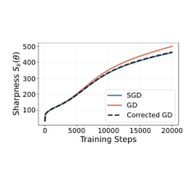
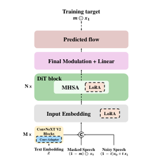

Junho So
I am a fourth-year undergraduate student in the Department of Mathematics at Ajou University in Suwon, South Korea.
I am interested in efficient training methods for deep learning.
Research
I am interested in efficient training methods for deep learning, especially for generative models. I am also interested in the training dynamics of optimization methods, particularly stochastic gradient descent (SGD).
Publications
CoreaSpeech: Korean Speech Corpus via JAMO-based Coreset Selection for Efficient and Robust Korean Speech Generation
NeurIPS 2025 Datasets and Benchmarks
paper / PDF / project page / code

Parameter-Efficient Fine-Tuning for Low-Resource Text-to-Speech via Cross-Lingual Continual Learning
Interspeech 2025 (Oral)
paper / PDF / project page
Education
Ajou University,
Suwon, South Korea
B.S., Department of Mathematics,
Mar. 2021 - Present
GPA: 4.33 / 4.50, Rank: 1 / 31
Awards
- Dec. 2025 Grand Prize, 21st Capstone Design Competition, Ajou University
- Dec. 2025 Third Prize, ACMSI Data Analytics Competition, Ajou University
- Dec. 2024 Second Prize, ACMSI Data Analytics Competition, Ajou University
Honors & Scholarships
- Spring 2026 Ajou University Yulgok Scholarship
- Fall 2025 Ajou University College of Natural Sciences Dean's Scholarship
- Fall 2025 Ajou University Dasan Scholarship
- Spring 2025 Ajou University Daewoo Scholarship
- Fall 2024 Kuwon Scholarship Foundation Scholarship
- Fall 2024 Ajou University Yulgok Scholarship
- Spring 2022 Ajou University Woncheon Scholarship